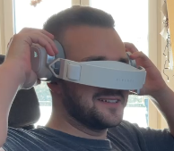

BUSINESS
Certified Specialist | Financial Advisor | Trainer | Life Insurance
Debeka Life Insurance a.G. since 01.01.2023 - present
Continentale Landesdirektion 3V Finanz Management GmbH since 17.06.2021 – 31.12.2022
Continentale Landesdirektion 3V Finanz Management GmbH since 08.2018 - 17.06.2021
Fischer Surface Technologies GmbH and Co. KG 2018-2019
Ulbrich Building Cleaning 2017-2018
Rewe Center Diez 2016 – 2017
Fischer Surface Technologies GmbH and Co. KG Summer 2015
BWV Koblenz 17.09.2022 – present
Vocational School of Economics Koblenz 2018-17.06.2021
Nicolaus-August-Otto School Diez 2014 – 2018
Realschule Plus Katzenelnbogen 2013 – 2014
2008 – 2013
2004 – 2008
PRIVATE
Homelab Enthusiast
My passion for computers began at a very young age. It all started with my father, as we upgraded old computers together, sometimes even soldering CPU modules to squeeze out every last MHz of performance. Initially, my first computer was mainly for gaming and schoolwork. However, it didn't take long for me to realize that these machines had far more potential than just running basic applications. My motivation was always to see what was possible and push those boundaries to the limit.
During the pandemic, with ample free time and a growing need for a variety of series and movies, I realized that subscribing to multiple streaming services was neither practical nor economical. This realization motivated me to find an alternative solution.
My homelab project started with a TrueNAS server equipped with 32TB of storage, providing enough space to create my own streaming platform. What I didn't anticipate was the rich experience it would offer. Buying a pre-built NAS wasn't appealing to me; I prefer the uniqueness and control that come with building something myself. I enjoy the process of researching components, finding good deals, and assembling them into a cohesive system. It's not just a hobby—it's a rewarding blend of creativity and practicality, where every new discovery and setup brings a sense of accomplishment.
Currently, my homelab includes not only the TrueNAS server but also a 24/7 Proxmox server and a Raspberry Pi for simpler tasks. Additionally, I transitioned from a classic Speedport/Fritzbox setup to the Unifi ecosystem, allowing me to manage my own DNS and enhance my network security.
My journey with TrueNAS, Proxmox, and Linux Server has significantly expanded my technical skills and problem-solving abilities. Each component has played a crucial role in enhancing my understanding of networking, virtualization, and system administration.
Starting with the TrueNAS server, I ventured into building my own streaming platform. This not only provided practical solutions to storage challenges but also deepened my knowledge of data management and backup strategies.
The Proxmox server introduced me to the world of virtualization, where I learned to create and manage virtual environments efficiently. This experience sharpened my ability to optimize system performance and resource allocation.
With Raspberry Pi, I explored projects from home automation to media centers, diving into embedded systems and DIY electronics. Each project required meticulous planning, precise execution, and troubleshooting, further honing my attention to detail and perseverance.
Throughout this journey, I remained deeply focused on mastering each technology stack, driven by a passion for innovation and continuous learning. From initial experimentation to sophisticated network management, every step has deepened my understanding and appreciation for technology, equipping me with the skills to tackle complex challenges and drive impactful solutions in any professional setting.
Intel Core i3-12100
MSI MAG B660M MORTAR
32GB DDR4-3200 RAM
32TB HDD Toshiba Storage
2TB SSD Samsung Storage
Seasonic Power Supply 650W Gold Modular
CasaOS
Docker
macOS Catalina
Nginx Proxy Manager
AdGuard main
Linux Server
Docker
AdGuard backup
Wireguard backup